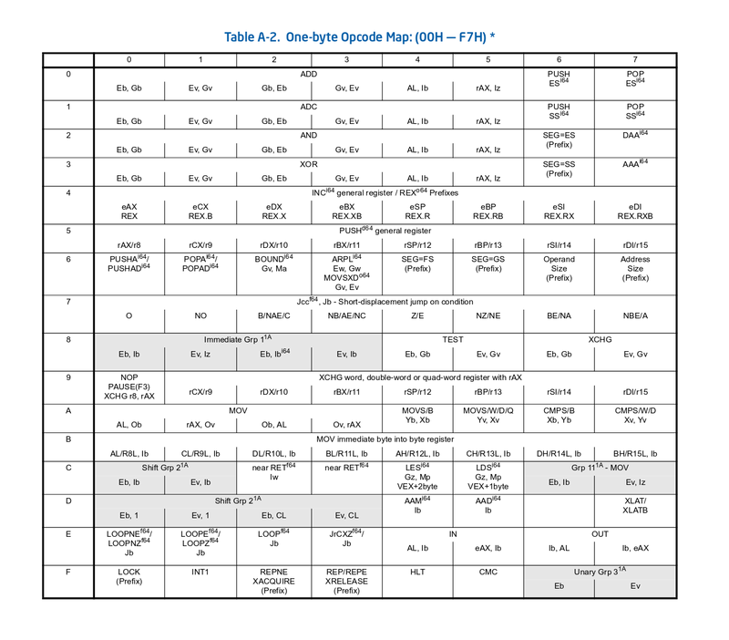
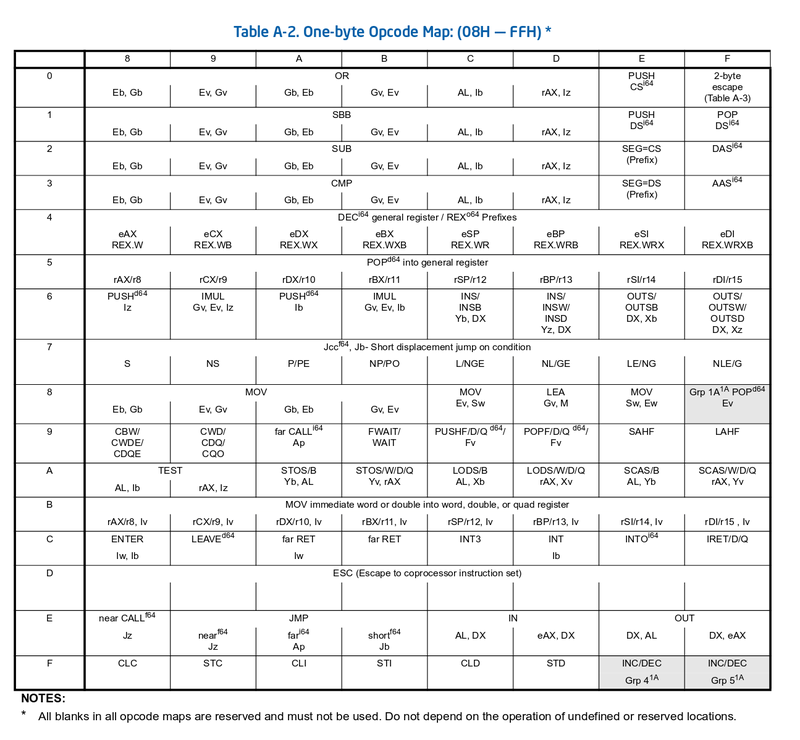

さて、アセンブリ言語について説明したので、せっかくなので機械語についても説明しておこう。
機械語(マシン語、machine language)は、アセンブルが終わったあとの、バイト列のことを指す。
正直な話をすると、機械語の知識が役立つ場面はあまりない。
アセンブリ言語の知識は、色々な場面で役立つ実用的で重要な知識であることは間違いないが、 それと比べると、機械語への理解は、そんなに必須ではなくて、知ってたからと言って辛い場面でサバイブしやすくなるということは特にない。
自分でアセンブラやリンカ、デバッガを作る人には重要な知識だが、OSを書く場合ですら機械語の知識が役立つ場面はほとんど無いだろう。
それでもせっかくなので解説しておこう。 正しく理解できれば、「機械語も単なるバイト列で特別なことなんか何もない」という感覚が身に付けられるはずだ。
まあよくわからなければ飛ばしてもらって構わない。リンカの説明を読む時に、知っていたほうがいい点もあるが、必須というほどでもないだろう。
ここでは、x86_64 を使う。x86_64 の機械語は、現代に生き残っている機械語の中では最も複雑と言ってよくて、 あんまり学習には向いてないのだが、筆者は身近なもので学習するのが一番だと思っているので、 ここはあえて x86_64 を使っていこうと思う。
x86_64 の機械語が理解できる頃には、他のCPUの機械語なんてクソ簡単に見えるようになっているはずだ。
https://software.intel.com/en-us/articles/intel-sdm に、Intel のマニュアルがあるので、それを開いてほしい。
ここでまず見てほしいのは、volume 2D (2018/10 時点) の Appendix A だ。
ここには、opcode table という表が書かれている。 opcode tableは、バイトと命令の対応を書いた表だ。


このふたつのテーブルは、命令バイト列の1byte目が、どの命令と対応するのかが書かれている。
この1byte目のように、機械語ビット列のなかで、命令の種類を区別するためのビット列をオペコード(opcode)と呼ぶ。
オペコードが1byteで、さらにオペランドを取る場合は、この先頭バイト列のあとに、オペランドを示すバイト列が続く。 Grpと書かれている部分は、オペコードが1byteよりも長くなっていて、後続のバイト列に応じて命令が変わる。
x86 の 32bit と、x86_64 では、少し対応が変わって、命令の名前の横にi64と書かれいている命令は、x86_64では使えない。(読み方の詳細はマニュアルに書かれているのでそちらを参照してほしい)
まずは、簡単なオペランドを取らない命令から見ていこう。 オペランドを取らない命令でよく使うのは、nop、ret などがある。
x8664_machine_language/one_byte.s
.globl main main: nop ret
gcc に -c を付けてコンパイルしよう。これまで通り a.out まで作ってしまってもよいが、 a.out は libc(TODO : libcの説明を書いてない) がリンクされていて、今は必要のない命令列が追加されてしまう。
-c を付けてコンパイルすると、one_byte.o というファイルができるはずだ。objdump -d を使ってこれを逆アセンブルしよう。
$ gcc -c one_byte.s $ objdump -d one_byte.o one_byte.o: ファイル形式 elf64-x86-64 セクション .text の逆アセンブル: 0000000000000000 <main>: 0: 90 nop 1: c3 retq
nop が 0x90、ret が 0xc3 になっていて、opcode tableにもその対応が書かれていることを確認してほしい。
opcode table には、near RET(0xc3) と far RET(0xcb) が書かれているが、 x86_64 のユーザ空間のプログラムでは、near RET だけ見ておけばよいのでこれの説明は省略する。 オペランド付きのRET(0xc2, 0xca) は、Linuxでは使うことはないので、これも見なくてよい。
次に即値をオペランドに取る命令だ。即値mov命令がこれに該当する。また、x86_64 では、rax レジスタは他のレジスタより若干優遇されていて、算術命令のうち、rax をオペランド取る命令は、専用の命令になる。
x8664_machine_language/one_byte_imm.s
.globl main main: mov $0x11223344, %eax mov $0x11223344, %ecx add $0x11223344, %eax sub $0x11223344, %eax ret
これもobjdump -d で見てみよう
0: b8 44 33 22 11 mov $0x11223344,%eax 5: b9 44 33 22 11 mov $0x11223344,%ecx a: 05 44 33 22 11 add $0x11223344,%eax f: 2d 44 33 22 11 sub $0x11223344,%eax 14: c3 retq
1byte 命令のあとに、32bit即値が続くのが確認できる。
ここでは、64bit レジスタではなく、32bit レジスタを使っている。
x86_64 では、多くの命令は、8bit命令と32bit命令の二種類の命令が用意されている。 16bit命令や64bit命令をを使う場合は、32bit 命令の前にプレフィクスを付ける。
16bit 命令を使うときは、命令の前に Operand size prefix(0x66) を付ける。 64bit 命令を使うときは、命令の前に REX prefix を付けて、REX prefix 中の W ビットを 1にする。REX prefix については、あとで詳しく解説する。とりあえずここで使うのは、W ビットを1にした 0x48 だ。
x8664_machine_language/one_byte_imm_size.s
.globl main main: mov $0x11, %al # 8bit 命令は別のオペコードが割り当てられている mov $0x1122, %ax # 16bit 命令は0x66が付く mov $0x11223344, %eax # 32bit 命令はプレフィクスが付かない mov $0x1122334455667788, %rax # 64bit 命令は、REXプレフィクスが付く。この場合は0x48 ret
0: b0 11 mov $0x11,%al 2: 66 b8 22 11 mov $0x1122,%ax 6: b8 44 33 22 11 mov $0x11223344,%eax b: 48 b8 88 77 66 55 44 movabs $0x1122334455667788,%rax 12: 33 22 11 15: c3 retq
8bit命令だけが、オペコードが 0xb0 になっていて、その他はオペコードは0xb8、16bitおよび64bit命令にはプレフィクスが付いていることを確認しよう
x86系命令セットの特徴として、多くの命令のオペランドにメモリを直接指定できるという点がある。
説明を簡単にするために、ここまでは使ってこなかったが、add命令などは、レジスタを経由しなくともメモリ上の値を直接操作することができる。
x8664_machine_language/several_add.s
$ gcc -c several_add.s $ objdump -d several_add.o several_add.o: file format elf64-x86-64 Disassembly of section .text: 0000000000000000 <main>: 0: 01 c1 add %eax,%ecx 2: 01 04 25 00 00 00 00 add %eax,0x0 9: 01 00 add %eax,(%rax) b: 01 04 00 add %eax,(%rax,%rax,1) e: 01 44 00 01 add %eax,0x1(%rax,%rax,1) 12: 01 84 00 00 80 00 00 add %eax,0x8000(%rax,%rax,1) 19: c3 retq
どの add も最初の1byte目は 0x01 になっていることを確認しよう。
x86_64 では多くの命令は、1byte のオペコードのあとに、 ModR/M というオペランドを指定する1byteが付く。 この ModR/M には、オペランドの種類もエンコードされていて、種類によっては、さらに後ろに種類に応じたバイト列が付く。
ModR/M の情報は、以下のように 8bit 中にエンコードされる。
| 0 | 1 | 2 | 3 | 4 | 5 | 6 | 7 | |
| r/m | reg | mod | ||||||
まず、reg フィールド。 x86_64ではModR/Mを使ってオペランドを2個指定する場合でも、どちらか1個はレジスタにしなければならない。 この1個のレジスタを示す 3bit が reg フィールドだ。 3bitの対応は以下のようになる。
| 0 | 1 | 2 | 3 | 4 | 5 | 6 | 7 |
| ax | cx | dx | bx | sp | bp | si | di |
3bit しか無いので、8個のレジスタしか指定できない。 これは、x86 が32bitの時代に、レジスタが8個しかなかったころの名残で、 あとから拡張された r8〜r15 はそのままでは指定できない。 r8〜r15 までのレジスタを使う方法については、REXプレフィクスのところで説明する。
あと、レジスタの順序が A,C,D,B となっているが、これはタイポではなくて、実際このとおりにエンコードされる。
x8664_machine_language/modrm_reg.s
.globl main main: add %eax, (%rax) add %ecx, (%rax) add %edx, (%rax) add %ebx, (%rax) add %esp, (%rax) add %ebp, (%rax) add %esi, (%rax) add %edi, (%rax) ret
$ gcc -c modrm_reg.s $ objdump -d modrm_reg.o modrm_reg.o: file format elf64-x86-64 Disassembly of section .text: 0000000000000000 <main>: 0: 01 00 add %eax,(%rax) 2: 01 08 add %ecx,(%rax) 4: 01 10 add %edx,(%rax) 6: 01 18 add %ebx,(%rax) 8: 01 20 add %esp,(%rax) a: 01 28 add %ebp,(%rax) c: 01 30 add %esi,(%rax) e: 01 38 add %edi,(%rax) 10: c3 retq
reg ビットが変化していることを確認しよう。
続いて、mod フィールド。mod フィールドは、r/m フィールドの種類を決める。
まずは一番簡単な、mod = 0b11 の場合だ。この場合、r/m フィールドの3bit は、レジスタを示す3bitになる。エンコード方法は regフィールドと同じだ。
x8664_machine_language/modrm_mod11.s
.globl main main: add %eax, %eax add %eax, %ecx add %eax, %edx add %eax, %ebx add %eax, %esp add %eax, %ebp add %eax, %esi add %eax, %edi .byte 0x01 # add %r32, r/m32 .byte 0xc0 # mod=11, reg=00, r/m=00 .byte 0x03 # add r/m32, %r32 .byte 0xc0 # mod=11, reg=00, r/m=00 ret
$ gcc -c modrm_mod11.s $ objdump -d modrm_mod11.o modrm_mod11.o: file format elf64-x86-64 Disassembly of section .text: 0000000000000000 <main>: 0: 01 c0 add %eax,%eax 2: 01 c1 add %eax,%ecx 4: 01 c2 add %eax,%edx 6: 01 c3 add %eax,%ebx 8: 01 c4 add %eax,%esp a: 01 c5 add %eax,%ebp c: 01 c6 add %eax,%esi e: 01 c7 add %eax,%edi 10: 01 c0 add %eax,%eax 12: 03 c0 add %eax,%eax 14: c3 retq
mod=0b11 の場合、r/m フィールドでレジスタを指定していることを確認しよう。
ついでに、最後の .byte と書かれた部分も見てほしい。
.byte は、アセンブラ用の疑似命令(pseudo instruction)と呼ばれる文のひとつで、 オペランドで指定した1byteを直接出力しろとアセンブラに対して指示する文だ。
逆アセンブルを見ると、.byte で指定した 4byte (0x01, 0xc0, 0x03, 0xc0) が出力されている。
10: 01 c0 add %eax,%eax 12: 03 c0 add %eax,%eax
見てほしいのは、この二つの命令は、機械語の命令は変わっているが、アセンブリ上でのオペコード、オペランドは全く一緒になっている点だ。
x86_64 では、整数二項算術演算は、operand0, operand1 どちらかがメモリオペランドが取れるように、二種類の命令が定義してある。
0x01 の add 命令は、operand0 がメモリオペランドになれて、modr/m の mod フィールドは、operand0 の種類を指定できる。
0x03 の add 命令は、operand1 がメモリオペランドになれて、modr/m の mod フィールドは、operand1 の種類を指定できる。
mod=0b11 の場合、レジスタオペランドになるので、0x01 と 0x03 はどちらもレジスタオペランドをふたつ取る add 命令になり、全く同じ意味になる。
次にmod=0b00,0b01,0b10 の場合だ。この場合はレジスタ間接参照するメモリオペランドをとり、 r/m フィールドの3bitで、間接参照に使うレジスタを指定する。 mod=0b00,0b01,0b10の場合で、ディスプレースメントのビット数が変わる。
命令のバイト数は短いほどよいので、できれば短くしたい。 x86_64 では、ディスプレースメントの値が小さい場合は、命令長が短くなるように設計されていて、 mod の値によってディスプレースメントのビット幅が変わる。
と、なる。実際に見ていこう。
x8664_machine_language/modrm_mod_disp.s
.globl main main: mov (%rax), %ecx # mod=0b00, r/m=0b000(ax), disp=0(0bit) mov 1(%rax), %ecx # mod=0b01, r/m=0b000(ax), disp=1(8bit) mov 256(%rax), %ecx # mod=0b10, r/m=0b000(ax), disp=256(32bit) ret
$ gcc -c modrm_mod_disp.s $ objdump -d modrm_mod_disp.o modrm_mod_disp.o: file format elf64-x86-64 Disassembly of section .text: 0000000000000000 <main>: 0: 8b 08 mov (%rax),%ecx 2: 8b 48 01 mov 0x1(%rax),%ecx 5: 8b 88 00 01 00 00 mov 0x100(%rax),%ecx b: c3 retq
ディスプレースメントの値のサイズによって、ModR/M の mod の値が変化しているのを確認しよう。
ただし、mod=0b00,0b01,0b10 の場合は、例外があり、r/m の 3bit でrsp(0b100),rbp(0b101)を指定できないことがある。
まず、mod=0b00 で、r/m=0b101 の場合、この場合は、他と同じルールに従うなら、オフセット無しのrbp間接参照となるが、 例外扱いされて、レジスタを使わない32bitアドレス直接参照になる。
x8664_machine_language/modrm_mod00_rm101.s
.globl main main: mov (%rbp), %ecx # mod=0b01,r/m=0b101, disp=0(8bit) mov 1(%rbp), %ecx # mod=0b01,r/m=0b101, disp=1(8bit) mov 256(%rbp), %ecx # mod=0b10,r/m=0b101, disp=256(32bit) ## 0x80000からロード mov 0x80000, %ecx # mod=0b00,r/m=0b101 ret
0000000000000000 <main>: 0: 8b 4d 00 mov 0x0(%rbp),%ecx 3: 8b 4d 01 mov 0x1(%rbp),%ecx 6: 8b 8d 00 01 00 00 mov 0x100(%rbp),%ecx c: 8b 0c 25 00 00 08 00 mov 0x80000,%ecx 13: c3 retq
mod=0b01,0b10 の場合は、他のレジスタと同じくr/m=0b101 の場合 rbp レジスタを使う。
次に、r/m フィールドの 3bit が 0b100 の場合だ。この場合、rsp は使われず、ModR/M バイトのあとに、 SIB という1バイトの情報が付加される。
x86_64 では、メモリオペランドで、レジスタのスケール、レジスタ値の加算、ディスプレースメント値の加算ができる。
mov 64(%rax,%rcx,4), %rdx # rax + rcx*4 + 64 からロード
この2個のレジスタ、スケール量を格納するのが、SIB バイトだ。
SIB バイトのビットの内訳は以下のようになる。
| 0 | 1 | 2 | 3 | 4 | 5 | 6 | 7 | |
| base | index | scale | ||||||
と、なる。
このSIBバイトに続いて、mod で示されるディスプレースメントが続く。ディスプレースメントの解釈は、SIBが無い場合と同じだ。つまり、
が、SIBバイトの後ろに続く。
x8664_machine_language/modrm_sib.s
.globl main main: ## ModR/M=0b0001_0100 : mod=0b00 (dispなし), reg=0b010(edx), r/m=0b100(SIB) ## SIB =0b0000_1000 : scale=0b00(x1), index=0b001(rcx), base=0b000(rax) mov (%rax,%rcx), %edx ## ModR/M=0b0001_0100 : mod=0b00 (dispなし), reg=0b010(edx), r/m=0b100(SIB) ## SIB =0b0100_1000 : scale=0b01(x2), index=0b001(rcx), base=0b000(rax) mov (%rax,%rcx,2), %edx ## ModR/M=0b0101_0100 : mod=0b01 (8bit disp), reg=0b010(edx), r/m=0b100(SIB) ## SIB =0b0000_1000 : scale=0b00(x1), index=0b001(rcx), base=0b000(rax) ## disp =0x1 mov 1(%rax,%rcx), %edx ret
SIB の index でも rsp(0b100) は例外扱いされていて、index を 0b100 にした場合、index は"無し"になる。
x8664_machine_language/modrm_sib_rsp.s
.globl main main: ## ModR/M=0b0001_0100 : mod=0b00 (dispなし), reg=0b010(edx), r/m=0b100(SIB) ## SIB =0b0010_0100 : scale=0b00(x1), index=0b100(なし), base=0b100(rsp) mov (%rsp), %edx ret
0000000000000000 <main>: 0: 8b 14 08 mov (%rax,%rcx,1),%edx 3: 8b 54 08 01 mov 0x1(%rax,%rcx,1),%edx 7: 8b 14 48 mov (%rax,%rcx,2),%edx a: c3 retq
0000000000000000 <main>: 0: 8b 14 24 mov (%rsp),%edx 3: c3 retq
これは、ModR/M の R/M フィールドで、rsp を指定できないので別に指定方法が必要だったのと、 rsp は基本的にスタックを指しているので、x2 などのスケールを付けることはまずありえない、 という二点から、このような対応がされていると思われる。
x86 の算術命令は即値オペランドをとることができる。
この即値をオペランドに取る命令は、レジスタをふたつオペランドに取る命令とは別のオペコードが割り当てられている。
x8664_machine_language/add_imm.s
.globl main main: add %eax, %eax add $1, %eax ret
0000000000000000 <main>: 0: 01 c0 add %eax,%eax # オペコードが01 2: 83 c0 01 add $0x1,%eax # オペコードが83 5: c3 retq
opcode table を確認しよう。オペコード 01 は、ADD Ev, Gv となっている。 (Ev が r/m フィールドで指定できる 32bit オペランド、Gv が 32 bit regフィールドで指定できる32 bit レジスタと解釈してほしい。正しい読みかたは、Intel マニュアルの読みかたのところで説明する。)
いっぽう、オペコード 83 は、add 命令ではなく、Immediate Grp 11Aとなっていることを確認しよう。
即値を取る算術命令のオペランドは、即値 + もう一個オペランド のふたつのオペランドを取ることが確定しており、 ModR/M の 8bit のうち、reg フィールドの 3bit が余っている。
先頭 1byte が 0x83 の場合は、この ModR/M の空いている3bitに、さらにオペコードビットを詰め込んで、 0x83 + 3bit の計 11bit でオペコードを構成する。
この 3bit と命令の対応は以下のとおりだ。
| reg の 3bit | 000 | 001 | 010 | 011 | 100 | 101 | 110 | 111 |
| 命令 | ADD | OR | ADC | SBB | AND | SUB | XOR | CMP |
(ADC,SBB,CMP命令の説明を書いてないが、あとでマニュアルの読み方を説明するので、そのあと各自で確認してほしい。CMP命令については、C言語のところで解説する)
x8664_machine_language/modrm_opcode.s
.globl main main: add $1, %eax or $1, %eax adc $1, %eax sbb $1, %eax and $1, %eax sub $1, %eax xor $1, %eax cmp $1, %eax ret
0000000000000000 <main>: 0: 83 c0 01 add $0x1,%eax 3: 83 c8 01 or $0x1,%eax 6: 83 d0 01 adc $0x1,%eax 9: 83 d8 01 sbb $0x1,%eax c: 83 e0 01 and $0x1,%eax f: 83 e8 01 sub $0x1,%eax 12: 83 f0 01 xor $0x1,%eax 15: 83 f8 01 cmp $0x1,%eax 18: c3 retq
先頭1byteが 0x83 になっており、続く ModR/M バイトの reg フィールド (3,4,5 bit) が変わっていることを確認しよう。
続いてREXプレフィクス について説明しよう。
x86 は、32bit から 64bit に拡張されるときに、レジスタ幅が64bitになり、さらにレジスタ数が8個から倍の16個に増えた。
この拡張された部分の情報を入れるのが、REXプレフィクスだ。
(ここまで書いた )
x86_64は、32bit x86命令セットとそれなりの互換性を持たせながら、64bitに拡張し、レジスタ数も増やすという無茶なノルマを達成するために、 REX プレフィクスというプレフィクスが増えた。
書くと長くなるので各自で自習してください